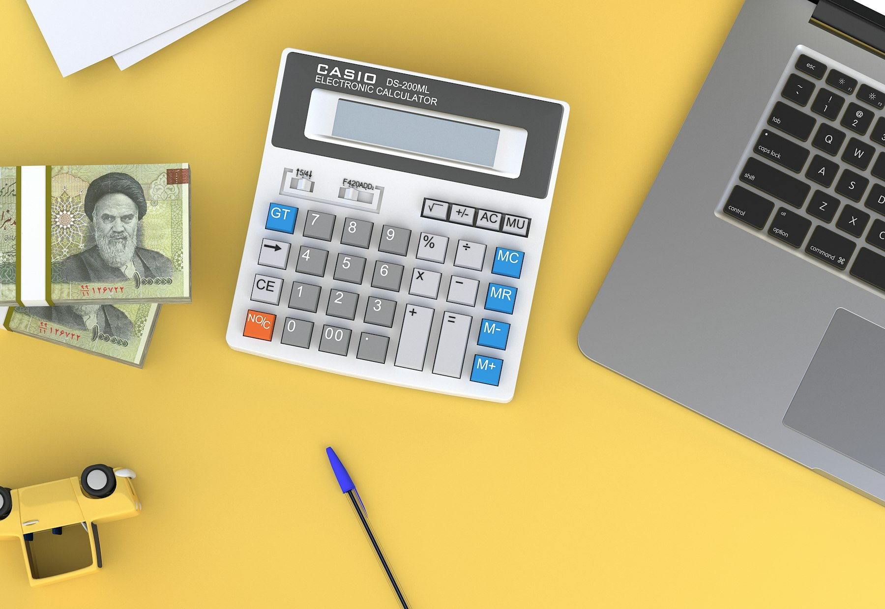

TL;DR
To effectively allocate your side hustle income, implement the 50/30/20 rule: 50% needs, 30% wants, 20% savings. Adjust based on earnings fluctuations, and keep 25% aside for taxes. Avoid common mistakes like ignoring savings and tax liabilities.
Who Should Pay Attention to Side Hustle Income Management?

If you’re juggling a side hustle with a regular job, it's crucial to manage that extra income well. Many side hustlers earn anywhere from $200 to $1,500 monthly, yet many fail to allocate those funds effectively.
Without a plan, those earnings can disappear swiftly, swallowed up by untracked expenses or overlooked taxes. Common misconceptions include thinking that side hustle income can be treated like pocket money or assuming that it doesn't require organized budgeting.
Mistaking your side hustle’s funds as disposable rather than as an investment in your future can have dire financial consequences...
Why Common Income Management Advice Falls Short
### Why Common Income Management Advice Falls Short
One significant mistake many beginners make is applying standard budgeting advice to side hustle income without recognizing its unique nature. Traditional budgeting frameworks often overlook the inherent variability and unpredictability of side hustle earnings, which can fluctuate drastically from month to month.
For instance, a graphic designer might earn $1,500 in January for a large project, but in February, they may only bring in $300 due to a lack of clients or project availability. This inconsistency necessitates a more dynamic approach to income allocation and savings.
Consider a programmer who supplements their full-time job with freelance app development. In March, they land a significant contract worth $2,000, but in April, their income dips to just $400 due to seasonal demand changes.
If this programmer uses a rigid monthly budget, they might overspend based on March's earnings, leading to financial strain when April rolls around. This could result in their inability to pay bills or invest in necessary tools, setting back their side hustle.
Furthermore, many side hustlers fail to set aside proper funds for tax obligations. If the same programmer doesn't allocate around 25-30% of their income for taxes, they could face a hefty tax bill, say $600, when filing.
This often leads to scrambling to gather funds at the last minute. Managing cash flow effectively also becomes crucial during downtimes; if they had set aside a portion of their high-earning months—perhaps 20% of each income—this could serve as a buffer in lean months, providing a safety net during periods of lower earnings.
It's also important to consider opportunity costs when deciding how to allocate that income. For example, if the designer mentioned earlier has the option to invest in an online course for $500 that could increase their income potential, they may hesitate out of fear of running out of funds in lean months.
A well-allotted side hustle income could allow them to take on such investments without jeopardizing their immediate financial stability. Balancing between re-investing in the hustle and managing living expenses requires careful planning, often a struggle when adhering strictly to traditional budgeting advice.
Implementing the 50/30/20 Rule for Your Side Hustle Income
### Implementing the 50/30/20 Rule for Your Side Hustle Income
The 50/30/20 rule is an effective budgeting method that can help you manage your side hustle income, especially if you're just starting out. This strategy divides your earnings into three main categories: 50% for needs, 30% for wants, and 20% for savings or debt repayment.
For example, if your monthly side hustle income totals $1,000, you might allocate $500 for essential expenses, such as rent, groceries, utility bills, and transportation costs. This ensures that your basic needs are met first.
Next, the 30% allocation—$300 in this case—is reserved for discretionary spending. This includes things like dining out, entertainment, or personal hobbies. This spending window allows you to enjoy the fruits of your labor without guilt, so long as it fits within the budget.
By actively engaging in experiences that bring you joy, such as a dinner with friends or a weekend getaway, you enhance your overall quality of life.
The remaining 20%, or $200, goes toward savings or paying off debt. This part of the budget is crucial for building a safety net or paying down high-interest loans, like credit card balances. If you're able to set aside this amount consistently, you'll find it can accumulate quickly; after five months, you'd have $1,000 in savings or debt repayment!
Timing is essential when implementing this rule. It's best to allocate these funds within the first week of receiving your income. This proactive approach helps prevent overspending in any one category, which can lead to financial stress later. Consider setting up an automatic transfer to a separate savings account right when you receive your paycheck. This takes out the temptation to spend that money impulsively.
Let’s take a practical scenario: imagine you’re a freelance graphic designer who earns $1,200 per month from side projects. After applying the 50/30/20 rule, you would set aside $600 for essentials—covering your rent, utilities, and necessary groceries.
You decide to treat yourself with $360 on monthly entertainment outings, which might include dining, a movie night, or a subscription service. Lastly, you reserve $240 for savings or paying down a student loan.
By sticking to this budget, you keep your financial priorities in check while still allowing yourself room for enjoyment. If you find that entertaining yourself takes a toll on your savings goal, you might need to reconsider what's classified as a 'want.' This could mean opting for more budget-friendly outings or scaling back on unessential subscriptions.
Over time, you’ll develop a clearer understanding of your financial situation, and this will set the stage for even smarter choices with your side hustle income.
Putting It All Together: A $1,000 Monthly Income Breakdown
### Putting It All Together: A $1,000 Monthly Income Breakdown
Imagine you receive $1,000 monthly from your side hustle. Using the popular 50/30/20 rule, your breakdown might initially look like this: $500 designated for essential costs (think rent, utilities, transportation, and groceries), $300 set aside for lifestyle choices (that new video game you’ve been eyeing, a couple of dinners out, or a monthly subscription to a streaming service), and $200 geared towards savings or paying down debt.
However, let’s keep it realistic. In the second month, if your income drops to $800, you’ll need to reassess your spending strategy. Staying aligned with the 50/30/20 framework, your new allocation would look like this: $400 for essentials (perhaps cutting back on that organic grocery shopping or opting for public transportation instead of driving), $240 for wants (you might need to delay that video game purchase or skip one of those planned dinners out), and $160 for savings or debt repayment (which could mean focusing on smaller debts first or pursuing a high-yield savings account).
To illustrate further, let’s consider a specific scenario involving Emily, a full-time teacher who supplements her income by designing and selling art prints online. In January, Emily earns $1,000, following the initial breakdown. She enjoys treating herself and plans a weekend getaway, which fits nicely into her $300 lifestyle budget.
However, when February rolls around, it’s a quiet month for sales, and she earns just $800. Emily realizes that she needs to prioritize her financial obligations over entertainment; her rent and basic living expenses remain unchanged at $400.
For her wants category, she decides to set a limit of $240, which means she has to postpone her getaway and perhaps cancel that Netflix subscription. For her savings, she resolves to set aside $160 to increase her emergency fund, knowing that having a financial buffer can ease future stress.
By being proactive, Emily opts to sell off some older artwork at a discount to increase her income that month. This small yet impactful decision not only bumps her earnings back up to $1,200 but also has her reassess her budget. With this new income, she could return to her original allocation but might also choose to invest a bit of the surplus in promotional efforts to boost her side hustle further.
This dynamic financial planning approach ensures Emily remains resilient during fluctuating income months, illustrating the importance of prioritizing essential expenses, realistically adjusting lifestyle choices, and implementing strong savings strategies. By putting these principles into practice, not only can you prevent financial stress, but you can also create opportunities for future growth.
Avoiding Pitfalls: Common Mistakes in Managing Side Hustle Income
### Avoiding Pitfalls: Common Mistakes in Managing Side Hustle Income
Overlooking taxes is a common mistake many side hustlers face, often leading to unwelcome financial surprises during tax season. A good rule of thumb is to set aside at least 25% of your side hustle income for taxes.
For instance, if you earn $1,000 in a month, you should put aside $250 for taxes, ensuring you're prepared for what you owe. Neglecting this can lead to owing even more, plus potential penalties — a crucial consideration if you're in a higher tax bracket or your state has additional tax requirements.
Another frequent pitfall is undervaluing savings. Many side hustlers might focus solely on reinvesting into their ventures, neglecting to build an emergency fund. An unexpected expense, like a car repair that costs $500, can quickly turn into a financial crisis if you don’t have savings set aside.
Imagine you’re running a freelance graphic design side hustle, generating $800 one month, and instead of saving a portion, you spend it all on new design software. When your car breaks down, you find yourself scrambling to cover that $500 expense, potentially resorting to high-interest credit options.
There's also the matter of discretionary spending. With an increase in side hustle income, it’s easy to fall into the trap of inflating your lifestyle. You might justify purchases like dining out more frequently or upgrading to a stylish new laptop because your side hustle seems sustainable.
However, if your income fluctuates, this behavior could lead to financial instability. For example, if you earn $1,500 one month but only $600 the next, those comfortable spending habits can quickly lead to overspending, pushing you into debt.
Recognizing the long-term pitfalls of such behaviors can save you from financial ruin.
Consider the scenario of Sarah, a digital marketer who makes $1,200 monthly through her freelance work. She initially saves 20% for taxes but forgets to increase that percentage as her earnings rise.
When tax season arrives, she finds herself with a $300 shortfall — resulting in a hefty penalty. Additionally, Sarah prides herself on her health and wellness routine, justifying $150 gym memberships and $50 a week on fresh smoothies because of her side hustle income.
When her earnings dip to $800 after a few lean months, she realizes she's overly reliant on that income stream. By failing to plan ahead, she feels the strain of financial insecurity and recognizes the need to adopt more control over her budget and spending choices.
By reframing her approach, she learns the importance of balancing immediate enjoyment with long-term stability.
Customizing Your Allocation Approach to Fit Your Lifestyle
Ultimately, the best allocation strategy is one that aligns with your individual financial goals and lifestyle. If you’re saving for a vacation or a new car, for example, you may want to adjust your savings target higher compared to what the 50/30/20 rule prescribes.
This would mean re-evaluating wants and slashing expenses in discretionary categories to funnel more into savings. Reviewing your allocations monthly ensures you stay in tune with both your income reality and your financial goals.
If you’ve dipped into your savings last month to cover an expense, maybe allocate a bit less for wants the following month to compensate...
FAQ
How can I effectively track my side hustle income?
Consider using budgeting apps like Mint or YNAB to monitor your earnings and prioritize your spending.
What percentage of my income should I save each month?
A minimum of 20% is recommended, but tailor it based on your personal financial goals.
Should I treat my side hustle income as part of my regular income?
While you can incorporate it into your budget, ensure you account for variances and tax implications uniquely.
This article has been reviewed for practical usefulness and is updated when new information changes.
Next step
Use the article as a decision point, not just reading material. Your next system matters more than more browsing.
Search more articles
Find related tools, workflows, and guides.
Photo credits
- Photo 1: Mehdi Mirzaie via Unsplash
- Photo 2: Valery Fedotov via Unsplash
- Photo 3: stokpic via Pixabay
- Photo 4: AhmadArdity via Pixabay
- Photo 5: Jakob Owens via Unsplash